Tableset is your AI-powered cooking companion. Whether you need recipe inspiration for tonight, want to master a new cuisine, or organize your family's meals for the week — Tableset helps you discover, cook, plan, and shop with confidence. This guide walks you through everything the app can do.
Meet the Smith Family
Throughout this guide, we'll follow the Smith family as they use Tableset in the kitchen.
In This Guide
1. Getting Started
Signing In
When you first open Tableset, you'll see a Sign in with Apple button. Tap it to create your account using your Apple ID. Your first name is used as your display name within the app — no email or last name is collected.
Your Free Trial
New users get a 1-week free trial with full access to every feature. After the trial, choose a subscription plan to continue:
- Basic ($9.99/month) — AI meal suggestions, Fill Week, recipe scanning & importing, nutrition analysis, and AI-generated meal images.
- Pro ($14.99/month) — Everything in Basic, plus Recipe Q&A chat, Cooking Mode Q&A, and higher daily limits.
Navigating the App
Tableset has five main areas, accessible from the tab bar at the bottom of the screen:
- Suggest — Get recipe inspiration based on your cravings, mood, or occasion
- Recipes — Your personal recipe collection — add, scan, import, and organize
- Sue (center button) — Your AI cooking assistant, always ready to help
- Plan — Organize your week with a visual meal calendar
- Grocery — Auto-generated shopping list from your planned meals
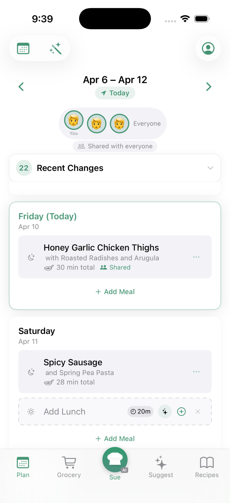
2. Discovering New Recipes
The Suggest tab is your recipe discovery hub. Tell Tableset what you're in the mood for, and AI will find meals that match.
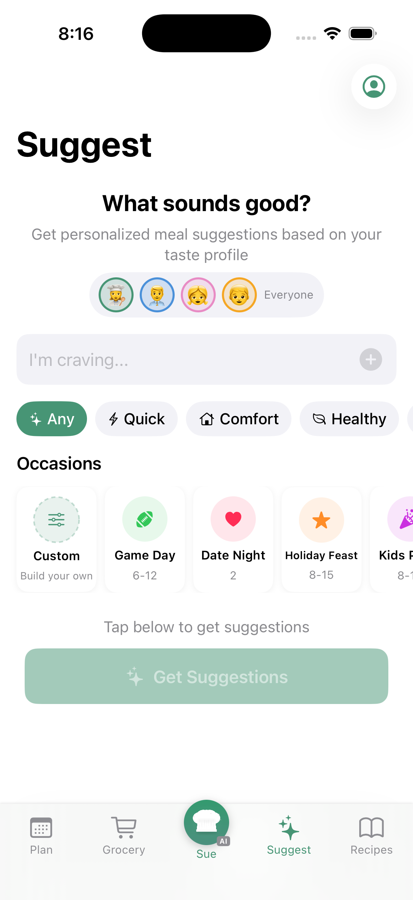
Cravings
Type what you're craving in the text box — "something spicy", "comfort food", "quick pasta" — and tap Get Suggestions. AI generates personalized meal ideas based on your input and your household's preferences.
Occasions
Planning a special event? Tap one of the occasion cards:
- Game Day, Date Night, Holiday Feast, BBQ, Brunch, Potluck, Pizza Night, Taco Night, and more
Each occasion generates themed meal suggestions perfect for the event.
Filters
Narrow your suggestions with filter pills: Quick (under 30 minutes), Comfort, Healthy, or New Cuisine.
Working with Suggestions
Each suggestion card shows the meal name, cuisine, cooking time, and difficulty. You can:
- Accept — Add it to your recipe library and plan
- Reject — Tell the AI you're not interested (helps future suggestions)
- Start Cooking — Jump straight into cooking mode
- Get More — Load additional suggestions
3. Your Recipe Library
The Recipes tab is your personal cookbook. All recipes you create, scan, import, or accept from suggestions live here.
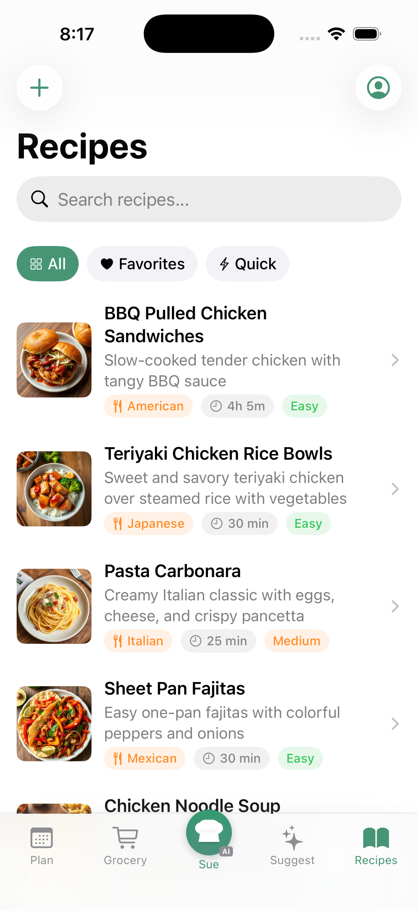
Adding Recipes
Tap the + button to add recipes in several ways:
Type It In
Create a recipe from scratch. Enter the name, ingredients, steps, cuisine type, difficulty, and cooking time.
Scan a Recipe
Have a recipe in a cookbook or on a card? Take a photo (or multiple photos) and AI will read the text and extract the ingredients and steps automatically. You can review and edit before saving.
Import from a Link
Found a recipe online? Copy the URL and paste it into Tableset. AI extracts the recipe from the webpage — no more scrolling past life stories to find the ingredients.
Recipe Details
Tap any recipe to see the full details:
- Overview — Ingredients (with serving adjustments), step-by-step instructions, quick-add to plan
- Nutrition — AI-estimated calories, macros, and cost per serving
- History — Past ratings, who cooked it, and feedback
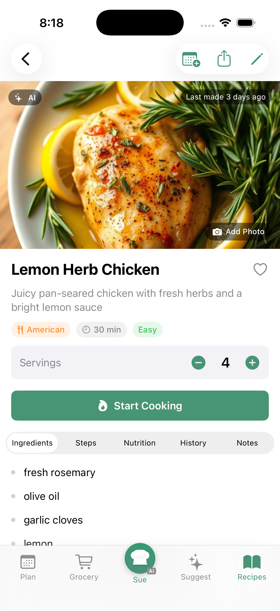
Each recipe has multiple tabs to explore:
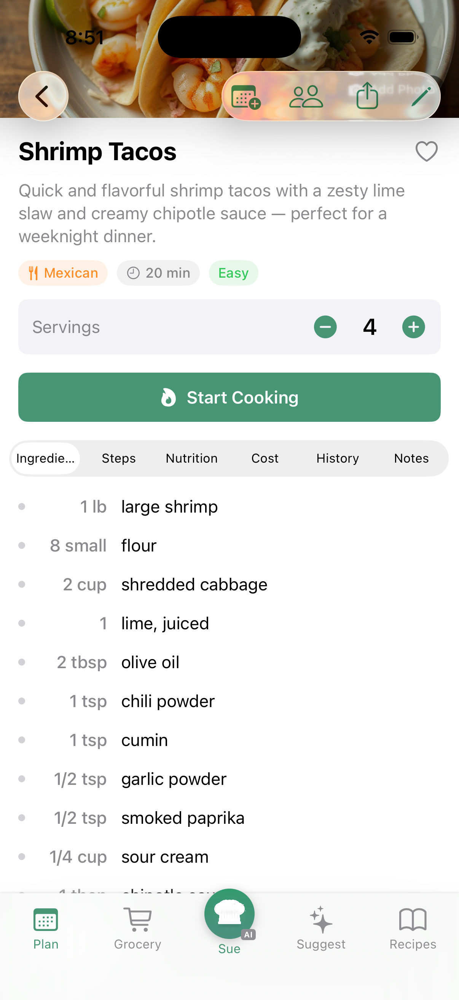
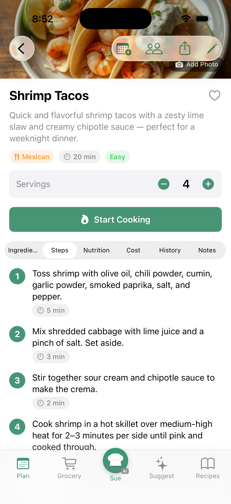
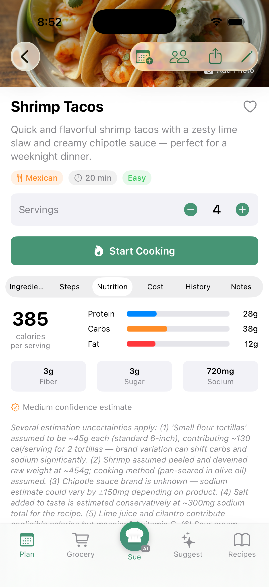
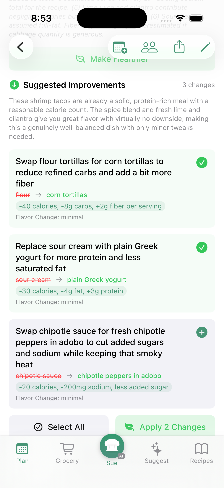
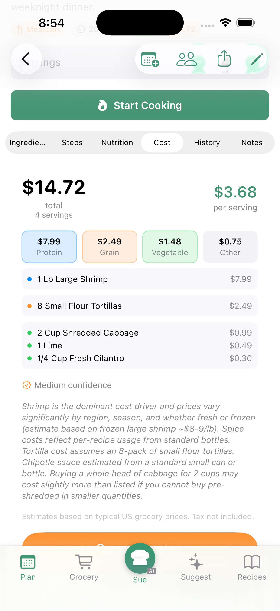
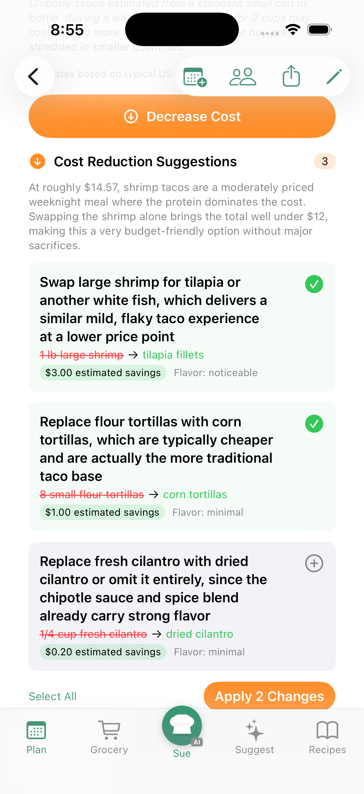
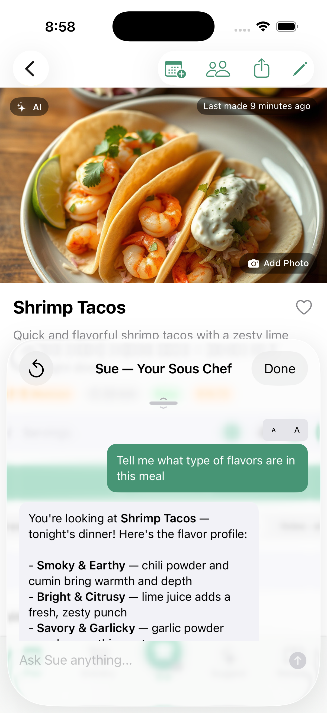
The History tab shows past ratings grouped by date — who cooked it, average stars, and feedback. The Notes tab is your personal space for tips, tweaks, and reminders about the recipe.
Adjusting Servings
Need to cook for more (or fewer) people? Use the serving adjuster to scale the recipe up or down. Ingredient quantities update automatically with smart fraction formatting.
4. Cooking with Tableset
When you're ready to cook, tap Start Cooking on any recipe. This opens Cooking Mode — a distraction-free, step-by-step view designed for the kitchen.
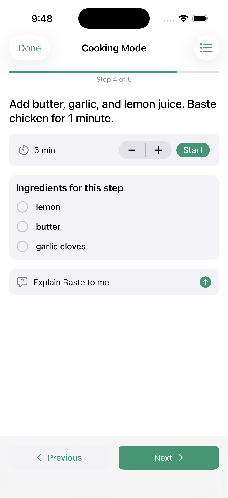
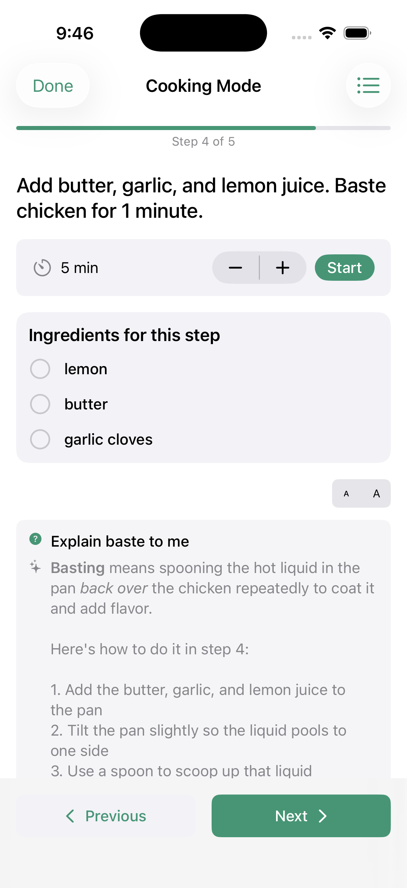
Step-by-Step Guidance
Each step is displayed in large, easy-to-read text. Swipe or tap the arrows to move between steps. A progress bar at the top shows how far along you are.
Timers
When a step involves timing (simmering, baking, resting), tap the timer button to start a countdown. You'll get a haptic buzz when time's up. Multiple timers can run simultaneously for different steps.
Ingredient Checklist
Toggle the ingredient view to see what you need for the current step. Tap ingredients as you prep them to check them off.
Ask Questions While Cooking (Pro)
With a Pro subscription, you can ask questions during cooking: "What does 'deglaze' mean?", "How do I know when the onions are caramelized?", "Can I substitute butter for oil?" The AI answers in the context of your specific recipe.
5. Meet Sue, Your Sous Chef
Sue is your AI sous chef — always ready with ideas, answers, and hands-on help. Tap the raised center button in the tab bar to chat with her anytime. She's not just a chatbot; she can actually take actions in the app on your behalf.
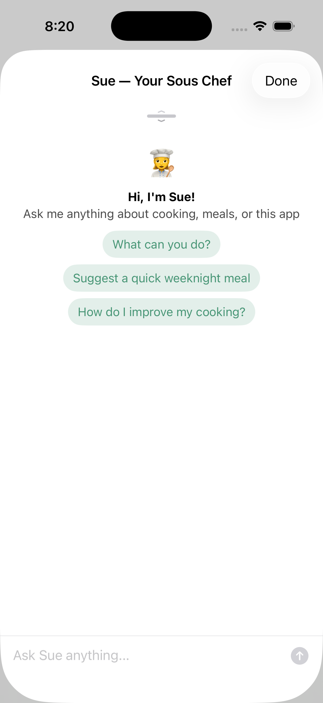
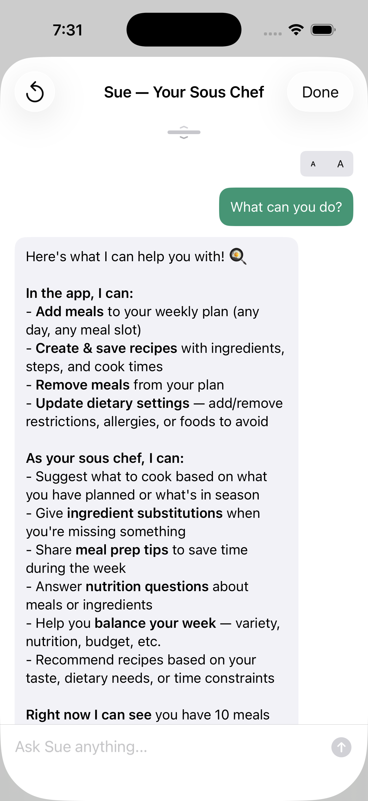
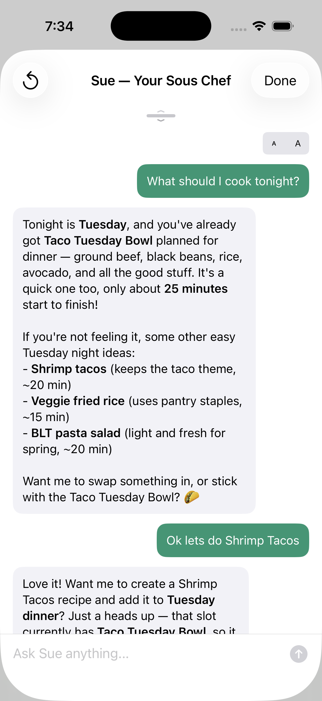
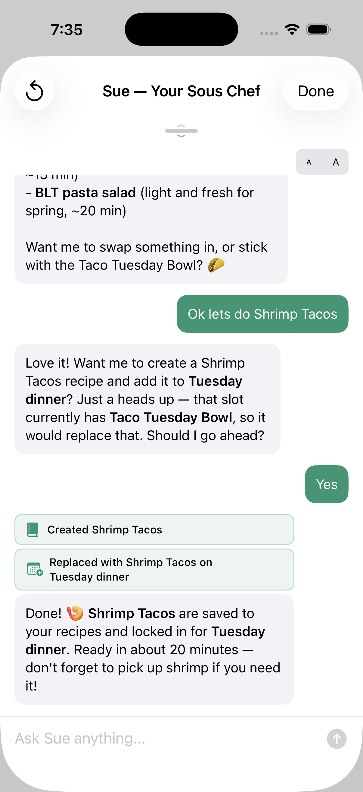
What Sue Can Do
- Create recipes — "Make me a quick weeknight pasta recipe"
- Add meals to your plan — "Add something healthy for dinner tonight"
- Answer cooking questions — "What pairs well with salmon?"
- Manage settings — "Add a nut allergy for Emma"
- Summarize your plan — "What's on the menu this week?"
- Suggest improvements — "How can I make this recipe healthier?"
Context Awareness
Sue knows what screen you're on. If you're looking at a recipe, she can answer questions about that specific dish. If you're on the Plan tab, she can help fill or rearrange your week.
Learning Your Preferences
The more you use Tableset, the better Sue gets. She learns from your meal ratings, cooking history, and the cuisines you gravitate toward. Over time, her suggestions become more and more tailored to your household.
6. Planning Your Week
When you're ready to organize your meals for the week, the Plan tab brings it all together. You'll see seven day cards, each showing your planned meals.
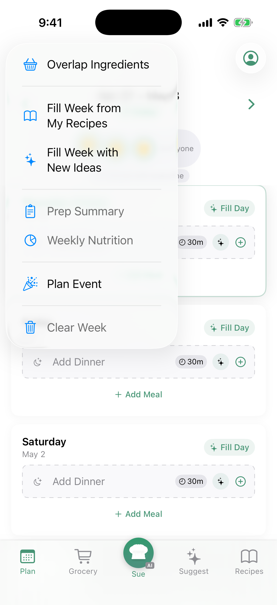
The Plan Toolbar
Tap the wand icon in the top right of the Plan tab to access powerful tools:
- Overlap Ingredients — Toggle smart ingredient overlap so recipes share common items, reducing waste and grocery cost.
- Fill from My Recipes — AI picks from your saved recipe collection to fill the week.
- Fill with New Ideas — AI generates a full week of brand new meals tailored to your household.
- Prep Summary — Get a prep overview for the week: what to chop, marinate, or thaw ahead of time.
- Weekly Nutrition — See estimated calories, protein, carbs, and fat across all planned meals.
- Clear Week — Remove all planned meals and start fresh.
Fill Your Week with AI
Instead of planning each meal one by one, let AI do the heavy lifting:
- Fill with New Ideas — AI generates a full week of meals tailored to your household's preferences, dietary restrictions, and time constraints.
- Fill from My Recipes — Same as above, but AI picks from recipes you've already saved.
- Fill Day — Tap the "Fill Day" button on any day card to fill just that day.
Adding Meals Manually
Prefer to choose your own meals? Tap Add Meal at the bottom of any day card. You can pick from your saved recipes or create a new one on the spot.
Per-Slot AI Suggestions
Each empty meal slot has a sparkle button. Tap it to get an AI suggestion for just that slot — perfect for when you have most of the week planned but need inspiration for one meal.
Marking Meals as Cooked
When you've made a meal, tap the checkmark to mark it as cooked. You'll be prompted to rate it — your feedback helps the AI learn what your household enjoys.
Rating Meals
After cooking, you can rate each meal with:
- Star rating (1–5) — How much did you enjoy it?
- Thumbs up or down — Quick sentiment
- "Would make again?" — Yes, Maybe, or No
- Feedback tags — Quick labels like "Kids Loved It", "Too Spicy", "Perfect", "Bland", etc.
- Notes — Free-text thoughts about the meal ("Could use more garlic", "Try with rice next time")
In a household, you can also select who ate the meal. This helps the AI understand individual preferences over time.
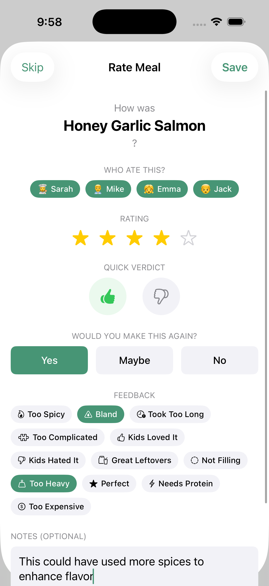
Prep Summary
Before a big cooking day, tap the wand icon and select Prep Summary. You'll get an overview of all the prep work needed for your planned meals — what to chop, marinate, or thaw ahead of time.
Weekly Nutrition
Want to see how your week stacks up nutritionally? Select Weekly Nutrition from the toolbar menu to see estimated calories, protein, carbs, and fat across all your planned meals.
7. Sharing with Family
Tableset is built for families. When you create a household, everyone can see the meal plan, coordinate cooking, and make sure every meal is safe for everyone.
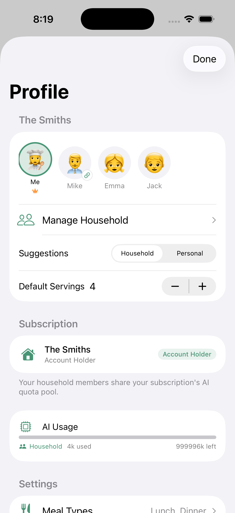
Creating a Household
Go to your Profile and tap Create Household. Give it a name (like "The Smiths") and you're the owner.
Inviting Members
Tap Invite to generate a 6-character invite code. Share it with family members via text message — they'll get a link they can tap to join directly.
Adding Dependents
Family members who don't have their own device (like young children) can be added as dependents. You set their name, dietary preferences, and allergies. Their needs are automatically included when AI plans meals.
Dietary Safety
Each household member has their own dietary profile: allergies, restrictions (vegetarian, gluten-free, etc.), health goals, spice tolerance, and cuisine preferences. When the AI suggests meals, it considers everyone who's eating.
Shared Meal Plans
Changes to the meal plan are visible to all household members in real time. You can see who added each meal and coordinate who's cooking what.
Shared Recipes
Found a great recipe? Share it to the household so everyone can access it. Tap the share icon on any recipe detail page.
8. Grocery Lists
Your meal plan automatically generates a consolidated grocery list. No more forgetting ingredients or buying duplicates.
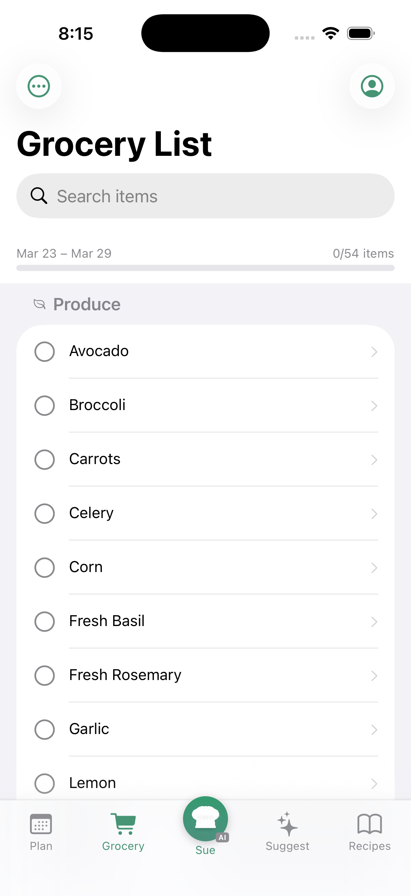
How It Works
Tableset looks at every recipe in your weekly plan, combines the ingredients, and groups them by category: produce, proteins, dairy, pantry staples, and more. Duplicate ingredients are merged (two recipes that need onions? You'll see the combined amount).
At the Store
Check off items as you shop. In a household, checked items sync so both partners can shop from the same list without doubling up.
Adding Custom Items
Need something that isn't in a recipe? Add items manually to the list.
9. Settings & Account
Tap your profile icon (top right on most screens) to access settings.
Dietary Preferences
Set your allergies, dietary restrictions (vegetarian, vegan, gluten-free, etc.), health goals, foods to avoid, spice tolerance, and cuisine preferences. These apply to AI suggestions and are shared with your household.
Meal Types
Choose which meals to plan for: breakfast, lunch, dinner, and/or snacks. Each day in your plan will show slots for your enabled meal types.
Cooking Time
Set maximum cooking time per meal type. If Mike only has 20 minutes for lunch, AI won't suggest a 2-hour stew.
Appearance
Switch between light and dark mode.
Subscription
View your current plan, upgrade or downgrade, and manage your subscription through Apple's subscription settings.
Delete Account
Scroll to the bottom of your profile to find Delete Account. This permanently removes all your server-side data. Recipes and meal plans stored on your device are not affected.
Getting Help
The App Help chat is always available in your settings, regardless of your subscription status. Ask questions about how to use any feature and get instant guidance.
That's everything! If you have questions, reach out to us at tableset.legal@gmail.com.